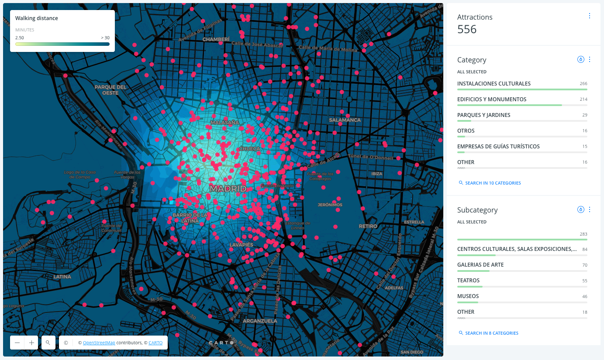

CARTO office
Welcome!
I hope you like our office :) Take a seat and let's talk a bit about what we do here.
Here is map with things to go see in Madrid, by walking time from here! 
and few more examples of how CARTO is being used to learn about our cities:
- Informo Madrid
- Traffic fines in Madrid
- NYC Crime map
- Traffic accidents and London weather
- Madrid trash's map
- Bus lines performance in Madrid
- Cadaster info in Benidorm
- Percentage of population below poverty threshold in NYC
- How New York was built
- BBVA Urban Discovery
- Atlas of inequality
- Global Forest Watch